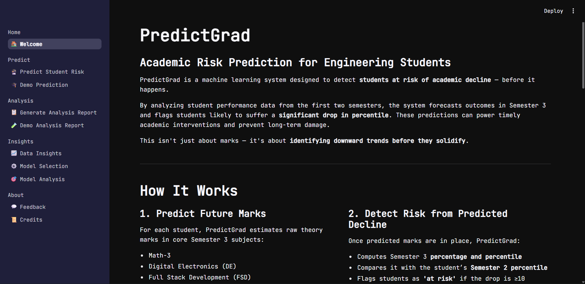
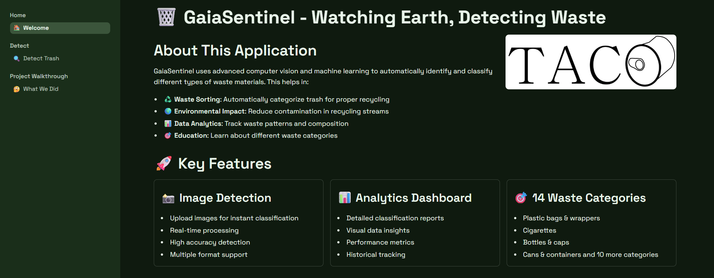
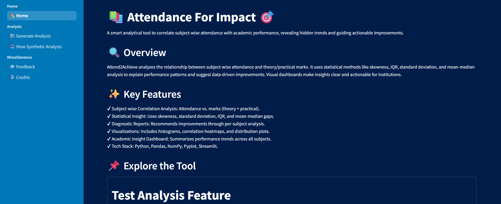

Currently pursuing a Bachelor's in Computer Engineering with a specialization in AI and Data Science at LJ University. I'm passionate about transforming raw data into actionable insights through analysis, visualization, and statistical modeling that drive real business decisions.
My work spans the full data lifecycle, from data wrangling and exploratory analysis to building interactive dashboards and BI reports. I enjoy uncovering the story hidden in datasets and communicating findings clearly to both technical and non-technical audiences.
When I'm not analyzing data, you'll find me exploring new visualization tools, working on predictive modeling projects, or keeping up with the latest trends in business intelligence and applied machine learning.
Relig Global

End-to-end ML pipeline predicting academic risk for 905 engineering students. Forecasts Sem 3 subject marks and classifies students likely to drop 10+ percentile points, deployed as an interactive Streamlit app.
→ Built 4 independent regression models (56 pipelines each) using Voting Regressor with BayesSearchCV & achieving MAE as low as 5.71
→ Designed risk classification using a StackingClassifier (CatBoost + LGBM + ExtraTrees) with Boruta feature selection and threshold tuning → Recall 0.66 on imbalanced data
→ Engineered percentile-based risk flag from predicted marks as classification target, strictly using Sem 1 and 2 data to prevent leakage
→ Delivered SHAP-powered explainability and EDA dashboards inside the deployed app

Real-time trash detection system using YOLOv8 trained on 1,500 annotated images across 14 waste categories, built to support environmental monitoring and smart waste classification.
→ Processed and remapped 60 raw COCO categories into 14 clean waste classes across 4,784 annotations with zero errors
→ Trained YOLOv8s on a T4 GPU for 100 epochs with HSV shift, horizontal flip, and scale augmentation
→ Dropped 14 underrepresented classes below 98 annotations to reduce model confusion and improve mAP
→ Deployed as a Streamlit app with image upload, live detection, and annotated bounding box output

Statistical analysis dashboard correlating student attendance with academic performance using multi-variate analysis and automated insight generation for educators.
→ Applied skewness, IQR, standard deviation, and correlation analysis across attendance and marks data
→ Built automated insight engine generating context-aware recommendations per institution type
→ Deployed interactive Streamlit dashboard with regression scatter plots, histograms, and strip plots
LJ University
TURN DATA
INTO
DECISIONS